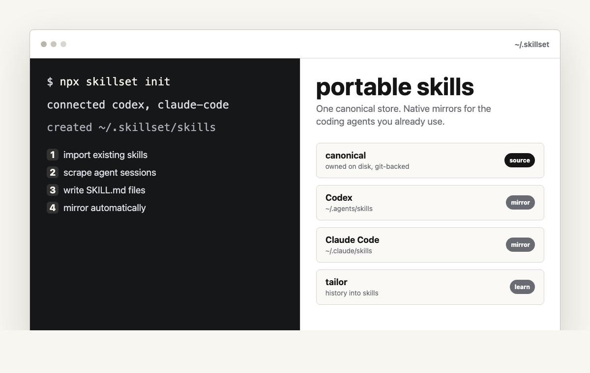

skillset
Turn agent-session lessons into reusable SKILL.md files you
own on disk.
Run two commands, start a Codex thread, and ask it to remember or tailor reusable skills.
npx skillset-cli init

Start in Codex
Install from this repo
Skillset ships as a repo-backed Codex plugin. Add the marketplace,
then Codex can route remember, tailor, list, and repair requests to
the existing sks CLI.
npx skillset-cli init
codex plugin marketplace add daniticau/skillset
1.Run the commands above.
2.Start a new Codex thread.
3.Say:
Remember this as a reusable skill.
If Codex does not enable it automatically, open /plugins,
choose Skillset, and install.
How it works
-
Create the store.
~/.skillset/skills/becomes the canonical source. - Import existing skills. Connected agent stores are consolidated before mirroring begins.
-
Learn from sessions.
sks tailormines history or captures direct instructions. - Mirror the result. Canonical skills are written to each agent's native skills directory.
- Protect edits. Mirror-side changes are promoted before skillset rewrites mirrors.
Commands
The public surface is small on purpose.
sks initCreate the store, connect detected agents, import skills.sks tailor [text...]Mine sessions or capture a direct instruction.sks listShow current skills and descriptions.sks statusShow mirrors, skill state, edits, and conflicts.sks connect <agent>Add an agent mirror and import its skills.sks disconnect <agent>Stop mirroring an agent without deleting files.sks edit <skill>Edit canonical, validate, then mirror.sks remove <skill>Delete canonical and prune connected mirrors.sks doctorCheck store, LLM, mirrors, sessions, and usage.sks doctor --repairReconcile mirrors and write the repaired store.